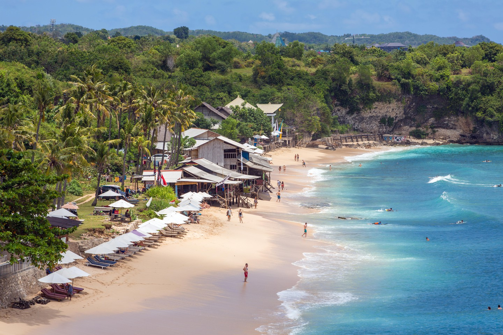
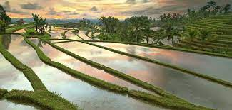
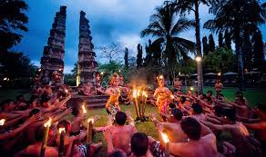
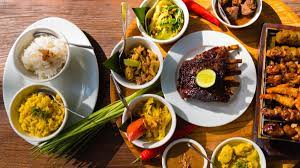

Welcome to the destination of your dreams: Bali!

Famous for its volcanic mountains, iconic beaches and coral reefs, Indonesia's resort island of Bali has topped TripAdvisor's best destination list multiple times! Among the more than 17,000 islands in Indonesia, Bali still shines the brightest in terms of tourism. There are countless other tropical destinations, but for millions of tourists each year, this fascinating island is the favourite.
Now, you might be wondering: Why Bali?
Well, here are some amazing reasons Bali is the destination choice for you!
- Idyllic beaches
- Every kind of natural beauty
- Captivating cultural scene
- The culinary scene
The beaches!
The unending list of stunning beaches is probably the most obvious reason to visit this tropical paradise in the Indonesian archipelago.
Each beach has its own charm, from soft white sand and limestone cliffs to extreme water sports and diving. From the mainstream Kuta and luxurious Nusa Dua neighbourhoods to hidden, remote beaches away from the crowds, there’s a beach for everyone, every need and every mood. You can visit several of them with Culture Trip by joining our epic 12-day Bali adventure, which includes Ubud, Candidasa and Canggu among numerous other alluring destinations.
The Beauty!
Beyond stunning beaches and magical temples, Bali has virtually every kind of natural beauty.
Glorious mountainous areas with lush greenery, scenic lakes, gorgeous waterfalls, iconic rice fields, flower gardens, gushing sacred rivers and secret canyons all make up the island’s landscape.There’s an activity for every adventurous soul in Bali. Catch the surf breaks at Bali’s most popular surfing spots or rent a board and start learning to ride the waves. Jump from the cliffs and slide down a natural waterslide in Aling-Aling Waterfall, or enjoy intricate artificial slides and other activities at the Waterbom. Descend into the sea inside a submarine, dive by yourself or experience walking on the seabed. You name it, Bali has it.
The Culture!
The Balinese are spiritual people, predominantly Hindus, and their houses are furnished with a small temple, at which they pray every day. Temple tours are particularly popular among tourists, not only for the religious value but also for cultural insights and aesthetic pleasure. From majestic sea temples overlooking the ocean to a soul-soothing grand temple complex up on the mountain, Bali’s temples shouldn’t be missed.
Bali’s beauty goes way deeper than its beautiful appearances. The island is also home to many traditional cultural traditions that are still practiced. The Balinese hold many ceremonies and celebrations throughout the year, lots of which can be enjoyed by curious tourists, from the Omed-Omedan kissing festival to the monster parade before the day of silence (Nyepi). Tourists can also enjoy Bali’s culture through music, dance and architecture.
The food!
Bali’s rich and fertile soil, and also its fascinating traditional recipes, have created a distinctive cuisine. Bali’s traditional meals can be enjoyed as street food or fine dining, and you can learn how to cook them yourself by taking part in a culinary masterclass in Ubud as part of Culture Trip’s immersive small-group Bali tour. Many international chefs are drawn to Bali to learn, create and modify recipes, resulting in neighbourhoods lined with restaurants, each with their own concepts. Bali also has no shortage of restaurants with international menus — American, Mexican, Greek, Chinese, French, Indian… There are also many restaurants serving organic, vegan or even raw food.
Each beach has its own charm, from soft white sand and limestone cliffs to extreme water sports and diving. From the mainstream Kuta and luxurious Nusa Dua neighbourhoods to hidden, remote beaches away from the crowds, there’s a beach for everyone, every need and every mood. You can visit several of them with Culture Trip by joining our epic 12-day Bali adventure, which includes Ubud, Candidasa and Canggu among numerous other alluring destinations.
Now, for the reviews:
"Good Bali private tour driver! Can take you to Kintamani, Jimbaran, Tanah Lot and lots more! Me and my husband used his service and he took us to many nice traditional food places where most guide books won't tell you! Highly recommended."
"We visited Bali in September, and Wayan Sukerta was recommended to us by friends who had used his services several times. We discussed the sort of thing we would like to see (countryside and nature, basically) and left it to Wayan to choose where to take us. His english is excellent btw, and he was very open to our questions about Balinese family life and culture."